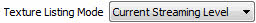
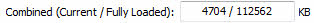
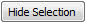
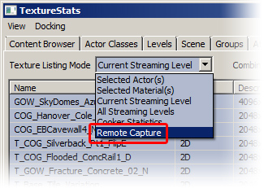

UDN
Search public documentation:
TextureStatsBrowserReference
日本語訳
中国翻译
한국어
Interested in the Unreal Engine?
Visit the Unreal Technology site.
Looking for jobs and company info?
Check out the Epic games site.
Questions about support via UDN?
Contact the UDN Staff
中国翻译
한국어
Interested in the Unreal Engine?
Visit the Unreal Technology site.
Looking for jobs and company info?
Check out the Epic games site.
Questions about support via UDN?
Contact the UDN Staff
UE3 Home > Unreal Editor and Tools > Texture Stats Browser Reference
Texture Stats Browser Reference
Overview
Opening the Texture Stats Browser
Texture Stats Browser Interface
Menu Bar
File
- Export - Exports the texture stats to a CSV file.
View
- Refresh - refresh the texture stats.
Docking
- Docked - This option will dock a currently floating browser into the main browser window. When the current browser is docked, this option appears checked.
- Floating - This option will undock a docked browser from the main browser window causing it to become a floating browser in its own window. When the current browser is floating, this option will be checked.
- Clone Browser - This option will create a duplicate of the current browser.
- Remove Browser - This option will remove or delete the current browser. This option is only enabled on cloned browser windows.
Tool Bar
|  | Changes the listing mode of the stat list. |
|  | Shows the current and fully loaded texture memory usage. |
|  | Hides the currently selected textures in the stat list. |
| Unhides all hidden textures in the stat list. |
How to use the "Remote Capture"
After starting the editor the remote connection target may need to be chosen. Now in the texture stats the mode "Remote Capture" can be used: Texture Listing Mode
Stat List
- Double-clicking the left mouse button on a line will jump to the texture in the Content Browser (if the texture path can be found in the available packages).
- Right-clicking on a line opens the stat list context menu.
- Clicking on the column labels sorts by that criteria, another click sorts in the opposite order. Two sort criteria are maintained to allow more convenient browsing.
- Left-clicking (shift and control for more option) allows to select assets.
- The selected assets can be hidden though the context menu or by the "Hide Selection" button.
- The hidden list of assets is maintained until the editor is quit or the hidden assets are revealed by clicking the "Unhide All" button.
Context Menu
- Find Actors using this texture - Selects any actors using the selected texture(s) and focuses the camera on them.
- Find Materials using this texture in the Content Browser - Opens the Content Browser and selects any materials which use the selected texture(s).
- Invert Selection - Clears the selection and then selects all textures in the stat list which were not previously selected.
- Hide Selection - Hides the currently selected textures in the stat list.
- Unhide All - Unhides all currently hidden textures in the stat list.